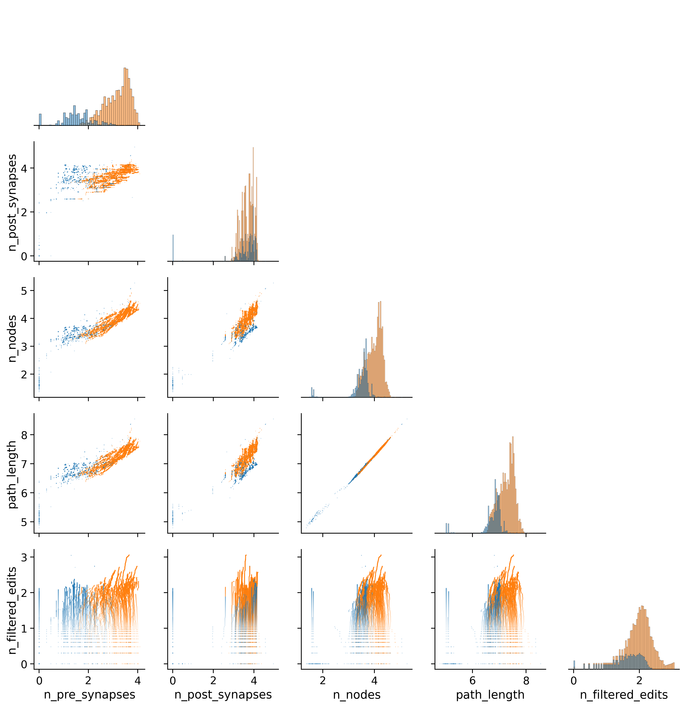
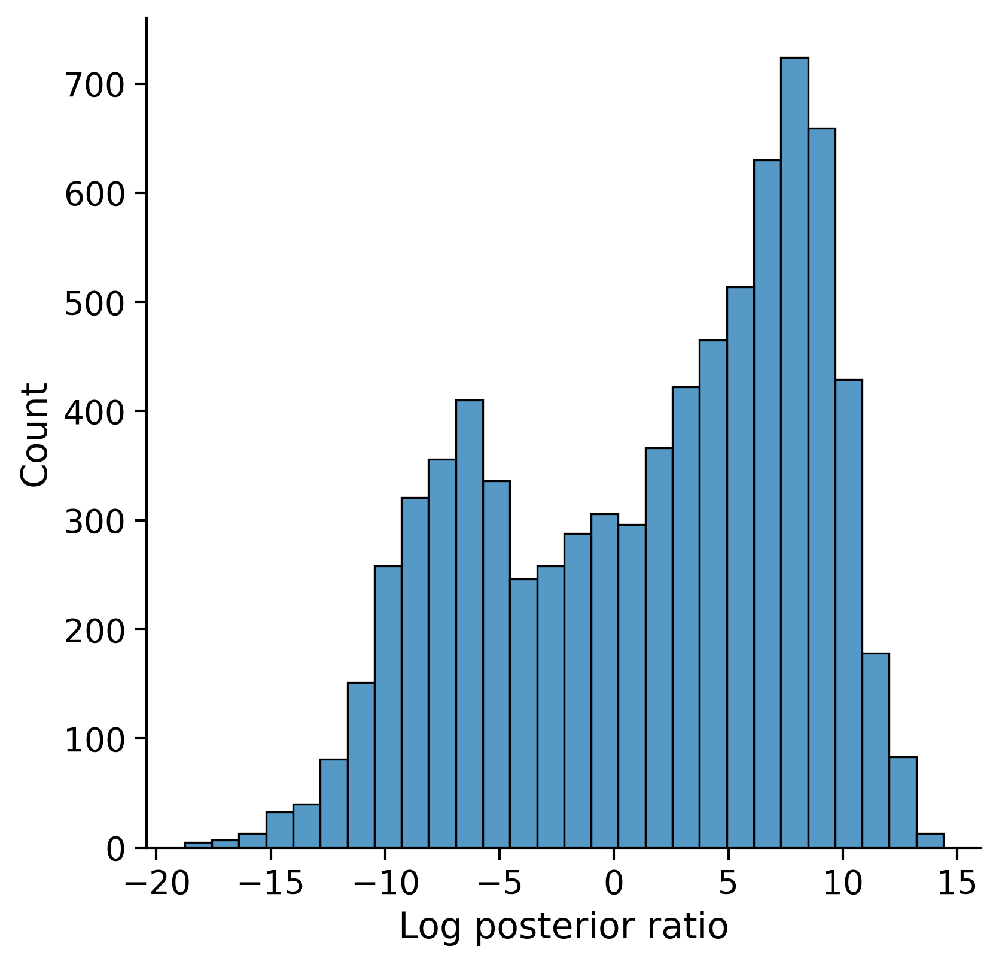

Quantifying proofreading effects on connectivity#
Ben Pedigo (he/him) Scientist I Allen Institute for Brain Science
Measurement design in connectomics#

Would you rather have many noisy connectivity measurements, or a few high-quality ones?
There exists cases where you’d actually prefer the “sloppy” version
Given finite resources, worth reflecting on how to proofread with specific scientific goals in mind#
Measurements in modern connectomics#
Automated segmentation + proofreading#

CAVE: Connectome Annotation Versioning Engine Dorkenwald, Schneider-Mizell et al. bioRxiv (2023)

Inhibition in mouse visual cortex#


Cell-type specific connectivity converged quickly#
Counterfactual proofreading#
Replay specific edits and not others, reconstruct what the network would look like


NMI(50% proofreading, full proofreading) = 0.82
Summary#
NOT saying we need less proofreading…
Monitoring proofreading with specific analyses/metrics in mind could help us decide how much proofreading is needed for a specific question
Counterfactual replay of edits can help understand how alternative proofreading strategies would affect downstream analyses
Ongoing work#
Prediction of edit impact with respect to a feature of interest
Can we find heuristics for deciding how “done” neurons are?#
Features for our heuristic/classifier#

LDA on proofreading features#
Log-transformed features
Ran linear discriminant analysis (LDA)
One version fit separately for each cell type (ITC, PTC, STC, DTC)
One version fit for all cell types, pooled
Cell-type specific and pooled LDA performed well#
*Interpreting precision/recall/accuracy is a bit tough here; computed over neuron-states
Feature sets comparison#
LDA posterior ratios#
\(+\) = more likely to be “good enough”
Precision-recall curve#
Looking at ‘em#
The (putative) good:
The (putative) bad: https://ngl.cave-explorer.org/#!middleauth+https://global.daf-apis.com/nglstate/api/v1/4998335736840192
Rating all inhibitory cells#

Cells are well spread out#
Acknowledgements#
Network Anatomy Clay Reid Agnes Bodor Adam Bleckert JoAnn Buchanan Casey M. Schneider-Mizell Dan Bumbarger Derrick Brittain Forrest Collman Steven Cook Nuno da Costa Bethanny Danskin Sven Dorkenwald Leila Elabbady Emily Joyce Dan Kapner Sam Kinn Cheryl Lea Gayathri Mahalingam Ben Pedigo Sharmi Seshamani Jenna Schardt Marc Takeno Russel Torres Wenjing Yin Chi Zhang
PM Lynne Becker Florence D’Orazi Sarah Naylor Shelby Suckow David Vumbaco Susan Sunkin
Morphology and 3D Reconstruction Rachel Dalley Clare Gamlin Staci Sorensen Grace Williams
Modeling & Simulation Ani Nandi Tom Chartrand Anatoly Buchin Yina Wei Soo Yeun Lee Costas Anastassiou
Technology Tim Fliss Rob Young And others
IT Brian Youngstrom Stuart Kendrick Scott Harrison Nathaniel Middleton And others
MPE Jay Borseth Collin Farrell And others
MindScope Reza Abbasi-Asi Anton Arkhipov Michael Buice Daniel Denman Brian Hu Josh Larkin Stefan Mihalas Daniel Millmann Gabe Ocker Naveen Ouellette Kevin Takasaki Saskia de Vries Jun Zhuang
Alen Institute for Brain Sciences Tanya Daigle Shenqin Yao Nikolas Jorstad Trygve Bakken Rebecca Hodge Nathan Gouwens Bosiljka Tasic Ed Lein Hongkui Zeng And many others
Princeton Sven Dorkenwald Tommy Macrina Sebastian Seung Nick Turner And team
Baylor Jake Riemer Andreas Tolias And team
Harvard Medical School Brett Graham Wei-Chung Lee And team
Janelia Khaled Khairy Stephan Saalfeld Carolyn Ott Jennifer Lippincott-Schwartz And others
JHU Jenna Glatzer Dwight Bergles
APL Brock Wester And team
Neuro Surgery and Behavior Lab Animal Services Transgenic Colony Management Finance Legal
Computing Resources BBP5 Supercomputing Resources National Energy Research Computing Center AI HPC Google Cloud
Funding IARPA - MICRONS NSF - NeuroNex NIH – BICCN